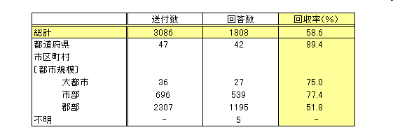
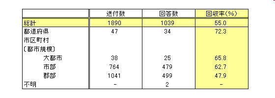
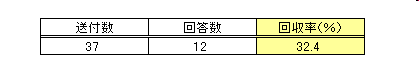

「外来語」言い換え提案
国立国語研究所
「外来語」言い換え提案
アンケート
国立国語研究所「外来語」委員会
自治体，省庁アンケート
目的
「外来語」言い換え提案は，分かりにくい外来語を分かりやすくする言葉遣いの工夫について，提案しています。その主な対象は，多くの人に情報を伝える立場にある，自治体や省庁など公共性の高い機関です。この提案が，自治体や省庁にどのように受け止められているかを知るために，アンケートを行いました。
概要
自治体アンケートを２回，省庁アンケートを１回，郵送により行いました。
自治体アンケート
第１回
- 対象：すべての都道府県，すべての市区町村の文書担当者。
- 実施時期：平成16年10月
- 回収率等：

※大都市=政令指定都市と東京23区。市部=それ以外の市。郡部=町村。
第２回
- 対象：すべての都道府県，すべての市区町村の文書担当者。
- 実施時期：平成18年4月
- 回収率等：

※大都市=政令指定都市と東京23区。市部=それ以外の市。郡部=町村。
※第１回と第２回とで，送付数が大きく異なっているのは，この間に進んだ市区町村の合併によるものです。
省庁アンケート
- 対象：すべての省庁の文書事務担当課。
- 実施時期：平成18年4月
- 回収率等：

結果
ページの先頭へ
本ページに関するお問い合わせはこちらへ
© 国立国語研究所 / リンクと複製について
最終更新日： 2006-08-31 (木) 11:09:36